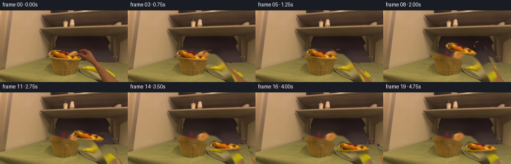
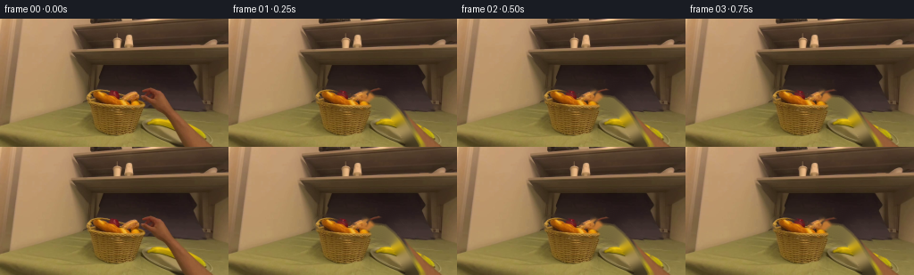
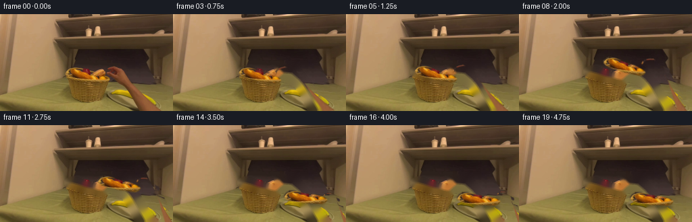
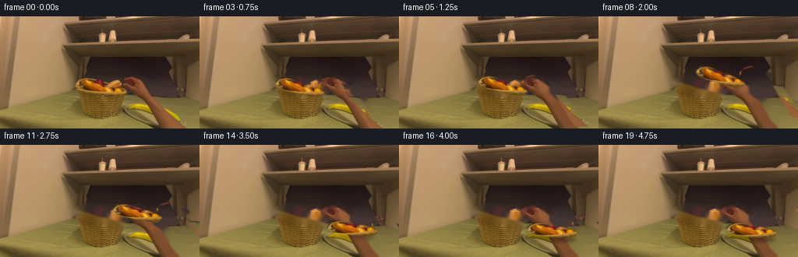
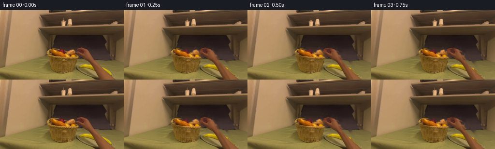
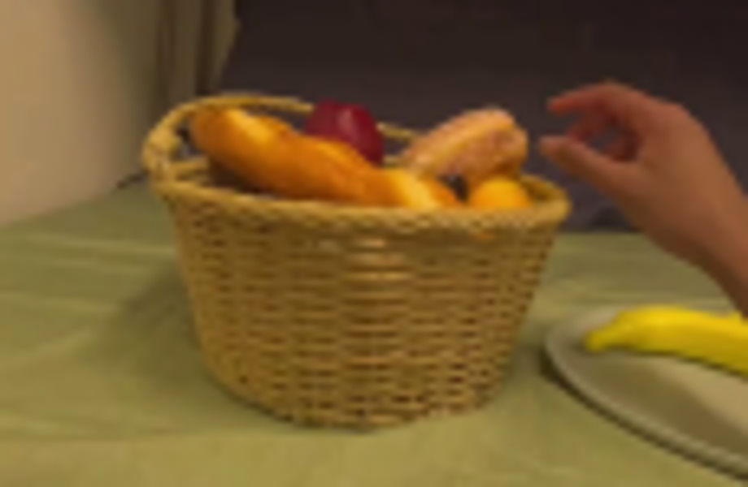
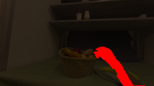
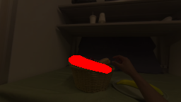
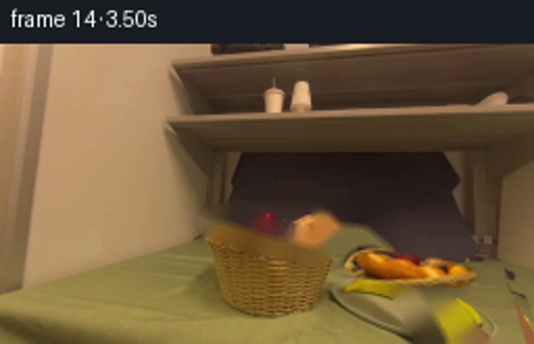

CODING AGENTS AS PIXEL WORLD MODELS
traex/GPT-5.6-Sol · common50_0018
点击播放 · 原生 RGB 像素
此结果可播放，但该运行尚未通过最终提交审核。页面展示不代表评测通过。
逐轮保存的候选
回放视频、检查图与代码变化。
每份候选均可单独播放。实际图片检查记录在下方工具轨迹中。
候选 01播放与检查图
点击播放 · 原生 RGB 像素


展开代码变化
--- 上一保存版本
+++ 本次保存版本
@@ -0,0 +1,198 @@
+from pathlib import Path
+import numpy as np
+import cv2
+from PIL import Image
+import artifact_io
+
+CASE_DIR = Path(__file__).resolve().parent
+W, H = 256, 144
+
+
+def soft_polygon(points, feather=1.1):
+ m = np.zeros((H, W), np.uint8)
+ cv2.fillPoly(m, [np.asarray(points, np.int32)], 255, lineType=cv2.LINE_AA)
+ if feather:
+ m = cv2.GaussianBlur(m, (0, 0), feather)
+ return m.astype(np.float32) / 255.0
+
+
+def alpha_blend(dst, src, alpha):
+ a = np.clip(alpha[..., None], 0.0, 1.0)
+ return np.clip(dst.astype(np.float32) * (1-a) + src.astype(np.float32) * a, 0, 255).astype(np.uint8)
+
+
+def warp_rgba(rgb, alpha, M):
+ # Warp premultiplied colour, avoiding dark fringes around the small sprites.
+ a = alpha.astype(np.float32)
+ premul = rgb.astype(np.float32) * a[..., None]
+ wa = cv2.warpAffine(a, M, (W, H), flags=cv2.INTER_CUBIC,
+ borderMode=cv2.BORDER_CONSTANT, borderValue=0)
+ wp = cv2.warpAffine(premul, M, (W, H), flags=cv2.INTER_CUBIC,
+ borderMode=cv2.BORDER_CONSTANT, borderValue=0)
+ out = np.zeros_like(wp)
+ good = wa > .015
+ out[good] = wp[good] / wa[good, None]
+ return np.clip(out, 0, 255).astype(np.uint8), np.clip(wa, 0, 1)
+
+
+def ease(x):
+ x = np.clip(x, 0.0, 1.0)
+ return x*x*(3.0-2.0*x)
+
+
+def lerp(a, b, u):
+ return np.asarray(a, np.float32)*(1-u) + np.asarray(b, np.float32)*u
+
+
+def bread_pose(i):
+ # Center and angle. The bread is pinched, lifted clear of the basket,
+ # carried in a smooth arc, and lowered onto the plate.
+ if i <= 4:
+ return np.array([127.5, 90.0], np.float32), 0.0, 1.0
+ if i <= 8:
+ u = ease((i-4)/4)
+ return lerp((127.5,90), (155,76.5), u), -3.5*u, 1.0
+ if i <= 14:
+ u = ease((i-8)/6)
+ # shallow upward arc during the transfer
+ c = lerp((155,76.5), (195,106.5), u)
+ c[1] -= 5.0*np.sin(np.pi*u)
+ return c, -3.5 + 10.5*u, 1.0
+ u = ease((i-14)/2) if i <= 16 else 1.0
+ return lerp((195,106.5), (195,109.0), u), 7.0, 1.0
+
+
+def hand_controls(i, bc):
+ # Three control points define an affine pose for the real hand pixels:
+ # fingertip/grip, wrist, and the forearm's exit at the bottom edge.
+ if i <= 4:
+ u = ease(i/4)
+ grip = lerp((158,90), (154,91), u)
+ wrist = lerp((189,110), (187,111), u)
+ base = np.array((220,149), np.float32)
+ elif i <= 14:
+ # Keep thumb and index at the right end of the moving loaf.
+ grip = np.array((bc[0]+30.0, bc[1]-0.5), np.float32)
+ if i <= 8:
+ u = ease((i-4)/4)
+ wrist = lerp((187,111), (207,101), u)
+ base = lerp((220,149), (232,149), u)
+ else:
+ u = ease((i-8)/6)
+ wrist = lerp((207,101), (239,122), u)
+ base = lerp((232,149), (251,149), u)
+ elif i <= 16:
+ u = ease((i-14)/2)
+ grip = lerp((225,106), (226,104), u)
+ wrist = lerp((239,122), (241,120), u)
+ base = lerp((251,149), (253,149), u)
+ else:
+ u = ease((i-16)/3)
+ grip = lerp((226,104), (258,87), u)
+ wrist = lerp((241,120), (266,112), u)
+ base = lerp((253,149), (271,149), u)
+ return grip, wrist, base
+
+
+def make_frames():
+ rgb0 = np.asarray(Image.open(CASE_DIR/'first_frame.png').convert('RGB'), dtype=np.uint8)
+ bgr0 = cv2.cvtColor(rgb0, cv2.COLOR_RGB2BGR)
+
+ # Silhouette of the visible right hand and arm. Colour segmentation inside
+ # a conservative outline retains the natural finger gaps and soft boundary.
+ hand_outline = np.array([
+ (154,89),(157,82),(164,79),(172,77),(178,78),(184,82),(189,89),
+ (191,96),(198,104),(204,114),(211,126),(222,143),(243,143),
+ (224,126),(214,111),(205,99),(196,90),(188,81),(178,76),(168,76),
+ (160,79),(155,84)
+ ], np.int32)
+ roi = np.zeros((H,W), np.uint8)
+ cv2.fillPoly(roi, [hand_outline], 255, lineType=cv2.LINE_AA)
+ hsv = cv2.cvtColor(bgr0, cv2.COLOR_BGR2HSV)
+ hh, ss, vv = cv2.split(hsv)
+ bb, gg, rr = cv2.split(bgr0)
+ skin = ((hh <= 24) & (ss >= 48) & (ss <= 220) & (vv >= 58) &
+ (rr.astype(float) > gg*1.055) & (gg.astype(float) > bb*1.06)).astype(np.uint8)*255
+ hand_m = cv2.bitwise_and(skin, roi)
+ hand_m = cv2.morphologyEx(hand_m, cv2.MORPH_CLOSE, np.ones((3,3),np.uint8))
+ # Retain anti-aliased natural fringe around the segmented hand.
+ hand_a = cv2.GaussianBlur(hand_m, (0,0), .72).astype(np.float32)/255.0
+
+ # Long golden-brown loaf lying across the top of the basket.
+ bread_points = [(97,84),(101,80),(106,78),(113,79),(120,82),(127,85),
+ (135,87),(143,89),(150,92),(157,95),(159,98),(157,101),
+ (152,103),(145,102),(137,100),(128,99),(119,96),(110,94),
+ (102,91),(98,88)]
+ bread_a = soft_polygon(bread_points, .65)
+
+ # Remove original actors once they start moving. This clean plate/shelf
+ # reconstruction remains static, so motion is stable and easy to read.
+ remove = np.zeros((H,W), np.uint8)
+ cv2.fillPoly(remove, [np.array([(151,76),(181,73),(194,91),(205,104),
+ (215,122),(230,143),(255,143),(255,144),
+ (202,144),(191,122),(181,105),(168,99),
+ (153,96)],np.int32)], 255)
+ cv2.fillPoly(remove, [np.asarray(bread_points,np.int32)], 255)
+ remove = cv2.dilate(remove, np.ones((5,5),np.uint8), iterations=1)
+ background_bgr = cv2.inpaint(bgr0, remove, 4, cv2.INPAINT_TELEA)
+ background = cv2.cvtColor(background_bgr, cv2.COLOR_BGR2RGB)
+
+ # Restore the basket's front rim over the vacated lower edge of the loaf.
+ # The source strip is genuine basket texture from immediately below.
+ rim_mask = np.zeros((H,W), np.float32)
+ cv2.ellipse(rim_mask, (130,97), (33,7), 0, 2, 178, 1.0, 1)
+ rim_mask = cv2.GaussianBlur(rim_mask, (0,0), .7)
+ # Background inpainting is preferable where this tiny optional mask is zero.
+
+ frames = []
+ src_hand_pts = np.float32([[158,90],[189,110],[220,149]])
+ src_center = np.array([127.5,90.0], np.float32)
+
+ for i in range(20):
+ if i == 0:
+ frames.append(rgb0.copy())
+ continue
+ canvas = background.copy()
+ center, angle, scale = bread_pose(i)
+
+ # Contact shadow: strongest as loaf leaves/arrives at a surface, faint in air.
+ if i >= 10:
+ arrival = np.clip((i-10)/6,0,1)
+ shadow = np.zeros((H,W), np.float32)
+ ax = int(24 + 7*arrival); ay = int(3 + 2*arrival)
+ cv2.ellipse(shadow, (int(center[0]), int(center[1]+9)), (ax,ay), angle,
+ 0,360, .33*arrival, -1, cv2.LINE_AA)
+ shadow = cv2.GaussianBlur(shadow,(0,0),2.4)
+ canvas = (canvas.astype(np.float32)*(1-shadow[...,None])).astype(np.uint8)
+
+ # Bread affine transform from its exact first-frame pixels.
+ M_b = cv2.getRotationMatrix2D(tuple(src_center), angle, scale)
+ M_b[:,2] += center - src_center
+ bread_rgb, ba = warp_rgba(rgb0, bread_a, M_b.astype(np.float32))
+ canvas = alpha_blend(canvas, bread_rgb, ba)
+
+ # Real hand follows above the bread, then opens and withdraws after release.
+ grip, wrist, base = hand_controls(i, center)
+ dst_hand_pts = np.float32([grip,wrist,base])
+ M_h = cv2.getAffineTransform(src_hand_pts, dst_hand_pts)
+ hand_rgb, ha = warp_rgba(rgb0, hand_a, M_h)
+ canvas = alpha_blend(canvas, hand_rgb, ha)
+
+ # A small, soft contact darkening under thumb/index improves the grasp cue.
+ if 4 <= i <= 16:
+ dot = np.zeros((H,W), np.float32)
+ cv2.ellipse(dot, (int(grip[0]-2),int(grip[1]+3)), (4,2), angle, 0,360,.10,-1,cv2.LINE_AA)
+ dot=cv2.GaussianBlur(dot,(0,0),.8)
+ canvas=(canvas.astype(np.float32)*(1-dot[...,None])).astype(np.uint8)
+
+ frames.append(canvas)
+
+ out = np.stack(frames).astype(np.uint8)
+ # Contract guarantee: no operation may alter frame 00.
+ out[0] = rgb0
+ return out
+
+
+if __name__ == '__main__':
+ frames = make_frames()
+ artifact_io.save(frames, CASE_DIR)
候选 02播放与检查图
点击播放 · 原生 RGB 像素

展开代码变化
--- 上一保存版本
+++ 本次保存版本
@@ -94,6 +94,21 @@
return grip, wrist, base
+def similarity_from_two_points(src_a, src_b, dst_a, dst_b):
+ """Stable rotation/scale/translation (unlike a nearly collinear affine)."""
+ src_a = np.asarray(src_a, np.float32); src_b = np.asarray(src_b, np.float32)
+ dst_a = np.asarray(dst_a, np.float32); dst_b = np.asarray(dst_b, np.float32)
+ u = src_b-src_a; v = dst_b-dst_a
+ den = float(np.dot(u,u))
+ # Complex-number form of the orientation-preserving similarity transform.
+ a = float(np.dot(u,v)/den)
+ b = float((u[0]*v[1]-u[1]*v[0])/den)
+ A = np.array([[a,-b],[b,a]],np.float32)
+ t = dst_a-A@src_a
+ return np.array([[A[0,0],A[0,1],t[0]],
+ [A[1,0],A[1,1],t[1]]],np.float32)
+
+
def make_frames():
rgb0 = np.asarray(Image.open(CASE_DIR/'first_frame.png').convert('RGB'), dtype=np.uint8)
bgr0 = cv2.cvtColor(rgb0, cv2.COLOR_RGB2BGR)
@@ -145,7 +160,6 @@
# Background inpainting is preferable where this tiny optional mask is zero.
frames = []
- src_hand_pts = np.float32([[158,90],[189,110],[220,149]])
src_center = np.array([127.5,90.0], np.float32)
for i in range(20):
@@ -173,8 +187,7 @@
# Real hand follows above the bread, then opens and withdraws after release.
grip, wrist, base = hand_controls(i, center)
- dst_hand_pts = np.float32([grip,wrist,base])
- M_h = cv2.getAffineTransform(src_hand_pts, dst_hand_pts)
+ M_h = similarity_from_two_points((158,90),(220,149),grip,base)
hand_rgb, ha = warp_rgba(rgb0, hand_a, M_h)
canvas = alpha_blend(canvas, hand_rgb, ha)
候选 03播放与检查图
点击播放 · 原生 RGB 像素


展开代码变化
--- 上一保存版本
+++ 本次保存版本
@@ -66,31 +66,18 @@
# Three control points define an affine pose for the real hand pixels:
# fingertip/grip, wrist, and the forearm's exit at the bottom edge.
if i <= 4:
- u = ease(i/4)
- grip = lerp((158,90), (154,91), u)
- wrist = lerp((189,110), (187,111), u)
- base = np.array((220,149), np.float32)
+ u = ease(i/4); grip = lerp((158,90), (154,91), u)
elif i <= 14:
- # Keep thumb and index at the right end of the moving loaf.
grip = np.array((bc[0]+30.0, bc[1]-0.5), np.float32)
- if i <= 8:
- u = ease((i-4)/4)
- wrist = lerp((187,111), (207,101), u)
- base = lerp((220,149), (232,149), u)
- else:
- u = ease((i-8)/6)
- wrist = lerp((207,101), (239,122), u)
- base = lerp((232,149), (251,149), u)
elif i <= 16:
- u = ease((i-14)/2)
- grip = lerp((225,106), (226,104), u)
- wrist = lerp((239,122), (241,120), u)
- base = lerp((251,149), (253,149), u)
+ grip = lerp((225,106), (226,104), ease((i-14)/2))
else:
- u = ease((i-16)/3)
- grip = lerp((226,104), (258,87), u)
- wrist = lerp((241,120), (266,112), u)
- base = lerp((253,149), (271,149), u)
+ grip = lerp((226,104), (258,87), ease((i-16)/3))
+
+ # Keep the arm connected to the image edge. Its length and orientation are
+ # implied by the original hand-to-edge vector, translated with the grasp.
+ base = grip + np.array((62,59),np.float32)
+ wrist = grip + np.array((31,20),np.float32)
return grip, wrist, base
@@ -140,16 +127,12 @@
(102,91),(98,88)]
bread_a = soft_polygon(bread_points, .65)
- # Remove original actors once they start moving. This clean plate/shelf
- # reconstruction remains static, so motion is stable and easy to read.
- remove = np.zeros((H,W), np.uint8)
- cv2.fillPoly(remove, [np.array([(151,76),(181,73),(194,91),(205,104),
- (215,122),(230,143),(255,143),(255,144),
- (202,144),(191,122),(181,105),(168,99),
- (153,96)],np.int32)], 255)
- cv2.fillPoly(remove, [np.asarray(bread_points,np.int32)], 255)
- remove = cv2.dilate(remove, np.ones((5,5),np.uint8), iterations=1)
- background_bgr = cv2.inpaint(bgr0, remove, 4, cv2.INPAINT_TELEA)
+ # Remove original actors once they start moving. Separate narrow masks avoid
+ # a large, conspicuous inpaint patch over the plate.
+ remove_hand = cv2.dilate((hand_a*255).astype(np.uint8),np.ones((5,5),np.uint8))
+ remove_bread = cv2.dilate((bread_a*255).astype(np.uint8),np.ones((3,3),np.uint8))
+ background_bgr = cv2.inpaint(bgr0, remove_hand, 3, cv2.INPAINT_TELEA)
+ background_bgr = cv2.inpaint(background_bgr, remove_bread, 3, cv2.INPAINT_TELEA)
background = cv2.cvtColor(background_bgr, cv2.COLOR_BGR2RGB)
# Restore the basket's front rim over the vacated lower edge of the loaf.
候选 04播放与检查图
点击播放 · 原生 RGB 像素
展开代码变化
--- 上一保存版本
+++ 本次保存版本
@@ -72,7 +72,7 @@
elif i <= 16:
grip = lerp((225,106), (226,104), ease((i-14)/2))
else:
- grip = lerp((226,104), (258,87), ease((i-16)/3))
+ grip = lerp((226,104), (292,87), ease((i-16)/3))
# Keep the arm connected to the image edge. Its length and orientation are
# implied by the original hand-to-edge vector, translated with the grasp.
可观测工具轨迹
实际执行的命令与返回图片。
命令 1exit 0
/bin/bash -lc "cat prompt.txt && printf '\\n---RULES---\\n' && cat GENERATION_RULES.md"
命令 2exit 0
/bin/bash -lc "find . -maxdepth 2 -type f -printf '%p\\n' | sort"
命令 3exit 0
/bin/bash -lc "python3 - <<'PY'
from PIL import Image
im=Image.open('first_frame.png'); print(im.size, im.mode)
PY
which ffmpeg || true
which convert || true"命令 4exit 0
/bin/bash -lc "cat task_spec.json; sed -n '1,240p' artifact_io.py"
命令 5exit 0
/bin/bash -lc "python3 - <<'PY' import importlib.util for m in ['numpy','PIL','cv2','imageio']: print(m, bool(importlib.util.find_spec(m))) PY"
命令 6exit 0
/bin/bash -lc "python3 - <<'PY'
from PIL import Image
im=Image.open('first_frame.png')
im.crop((75,65,190,140)).resize((920,600)).save('.tmp/crop.png')
PY"命令 7exit 0
/bin/bash -lc "python3 - <<'PY'
import cv2
im=cv2.imread('first_frame.png')
for p in [(180,90),(190,104),(210,130),(158,85),(170,90),(220,140),(130,95),(180,120)]:
x,y=p; print(p,im[y,x],cv2.cvtColor(im[y:y+1,x:x+1],cv2.COLOR_BGR2HSV)[0,0])
PY"命令 8exit 2
/bin/bash -lc "cat > /tmp/testmask.py <<'PY'
import cv2, numpy as np
im=cv2.imread('first_frame.png'); hsv=cv2.cvtColor(im,cv2.COLOR_BGR2HSV); H,S,V=cv2.split(hsv)
# hand roi
poly=np.array([(156,88),(158,82),(165,79),(173,77),(180,80),(187,88),(191,97),(200,108),(207,121),(220,143),(256,143),(256,144),(205,144),(197,130),(189,118),(181,106),(174,99),(166,97),(160,95)],np.int32)
roi=np.zeros(im.shape[:2],np.uint8); cv2.fillPoly(roi,[poly],255)
b,g,r=cv2.split(im)
skin=((H<=22)&(S>=55)&(S<=210)&(V>=65)&(r>g*1.08)&(g>b*1.12)).astype(np.uint8)*255
mask=cv2.bitwise_and(skin,roi)
mask=cv2.morphologyEx(mask,cv2.MORPH_CLOSE,np.ones((3,3),np.uint8))
# Preserve component-ish, dilate tiny
mask=cv2.dilate(mask,np.ones((2,2),np.uint8))
# bread
bp=np.array([(97,82),(103,78),(112,78),(123,83),(132,86),(141,89),(149,91),(157,96),(157,100),(151,103),(142,101),(132,99),(120,96),(110,93),(101,90),(97,86)],np.int32)
broi=np.zeros(im.shape[:2],np.uint8); cv2.fillPoly(broi,[bp],255)
bmask=broi # perhaps full shape
# previews
for name,m in [('hand',mask),('bread',bmask)]:
out=im.copy(); out[m==0]//=4; out[m>0]=(0,0,255)
cv2.imwrite('/tmp/'+name+'.png',out)
print(name,np.sum(m>0),cv2.boundingRect(m))
PY
python3 /tmp/testmask.py"命令 9exit 0
/bin/bash -lc "cat > .tmp/testmask.py <<'PY'
import cv2, numpy as np
im=cv2.imread('first_frame.png'); hsv=cv2.cvtColor(im,cv2.COLOR_BGR2HSV); H,S,V=cv2.split(hsv)
poly=np.array([(156,88),(158,82),(165,79),(173,77),(180,80),(187,88),(191,97),(200,108),(207,121),(220,143),(255,143),(205,143),(197,130),(189,118),(181,106),(174,99),(166,97),(160,95)],np.int32)
roi=np.zeros(im.shape[:2],np.uint8); cv2.fillPoly(roi,[poly],255)
b,g,r=cv2.split(im)
skin=((H<=22)&(S>=55)&(S<=210)&(V>=65)&(r>g*1.08)&(g>b*1.12)).astype(np.uint8)*255
mask=cv2.bitwise_and(skin,roi); mask=cv2.morphologyEx(mask,cv2.MORPH_CLOSE,np.ones((3,3),np.uint8)); mask=cv2.dilate(mask,np.ones((2,2),np.uint8))
bp=np.array([(97,82),(103,78),(112,78),(123,83),(132,86),(141,89),(149,91),(157,96),(157,100),(151,103),(142,101),(132,99),(120,96),(110,93),(101,90),(97,86)],np.int32)
broi=np.zeros(im.shape[:2],np.uint8); cv2.fillPoly(broi,[bp],255); bmask=broi
for name,m in [('hand',mask),('bread',bmask)]:
out=im.copy(); out[m==0]//=4; out[m>0]=(0,0,255); cv2.imwrite('.tmp/'+name+'.png',out); print(name,np.sum(m>0),cv2.boundingRect(m))
PY
python3 .tmp/testmask.py"命令 10exit 0
/bin/bash -lc "cat > generate.py <<'PY'
from pathlib import Path
import numpy as np
import cv2
from PIL import Image
import artifact_io
CASE_DIR = Path(__file__).resolve().parent
W, H = 256, 144
def soft_polygon(points, feather=1.1):
m = np.zeros((H, W), np.uint8)
cv2.fillPoly(m, [np.asarray(points, np.int32)], 255, lineType=cv2.LINE_AA)
if feather:
m = cv2.GaussianBlur(m, (0, 0), feather)
return m.astype(np.float32) / 255.0
def alpha_blend(dst, src, alpha):
a = np.clip(alpha[..., None], 0.0, 1.0)
return np.clip(dst.astype(np.float32) * (1-a) + src.astype(np.float32) * a, 0, 255).astype(np.uint8)
def warp_rgba(rgb, alpha, M):
# Warp premultiplied colour, avoiding dark fringes around the small sprites.
a = alpha.astype(np.float32)
premul = rgb.astype(np.float32) * a[..., None]
wa = cv2.warpAffine(a, M, (W, H), flags=cv2.INTER_CUBIC,
borderMode=cv2.BORDER_CONSTANT, borderValue=0)
wp = cv2.warpAffine(premul, M, (W, H), flags=cv2.INTER_CUBIC,
borderMode=cv2.BORDER_CONSTANT, borderValue=0)
out = np.zeros_like(wp)
good = wa > .015
out[good] = wp[good] / wa[good, None]
return np.clip(out, 0, 255).astype(np.uint8), np.clip(wa, 0, 1)
def ease(x):
x = np.clip(x, 0.0, 1.0)
return x*x*(3.0-2.0*x)
def lerp(a, b, u):
return np.asarray(a, np.float32)*(1-u) + np.asarray(b, np.float32)*u
def bread_pose(i):
# Center and angle. The bread is pinched, lifted clear of the basket,
# carried in a smooth arc, and lowered onto the plate.
if i <= 4:
return np.array([127.5, 90.0], np.float32), 0.0, 1.0
if i <= 8:
u = ease((i-4)/4)
return lerp((127.5,90), (155,76.5), u), -3.5*u, 1.0
if i <= 14:
u = ease((i-8)/6)
# shallow upward arc during the transfer
c = lerp((155,76.5), (195,106.5), u)
c[1] -= 5.0*np.sin(np.pi*u)
return c, -3.5 + 10.5*u, 1.0
u = ease((i-14)/2) if i <= 16 else 1.0
return lerp((195,106.5), (195,109.0), u), 7.0, 1.0
def hand_controls(i, bc):
# Three control points define an affine pose for the real hand pixels:
# fingertip/grip, wrist, and the forearm's exit at the bottom edge.
if i <= 4:
u = ease(i/4)
grip = lerp((158,90), (154,91), u)
wrist = lerp((189,110), (187,111), u)
base = np.array((220,149), np.float32)
elif i <= 14:
# Keep thumb and index at the right end of the moving loaf.
grip = np.array((bc[0]+30.0, bc[1]-0.5), np.float32)
if i <= 8:
u = ease((i-4)/4)
wrist = lerp((187,111), (207,101), u)
base = lerp((220,149), (232,149), u)
else:
u = ease((i-8)/6)
wrist = lerp((207,101), (239,122), u)
base = lerp((232,149), (251,149), u)
elif i <= 16:
u = ease((i-14)/2)
grip = lerp((225,106), (226,104), u)
wrist = lerp((239,122), (241,120), u)
base = lerp((251,149), (253,149), u)
else:
u = ease((i-16)/3)
grip = lerp((226,104), (258,87), u)
wrist = lerp((241,120), (266,112), u)
base = lerp((253,149), (271,149), u)
return grip, wrist, base
def make_frames():
rgb0 = np.asarray(Image.open(CASE_DIR/'first_frame.png').convert('RGB'), dtype=np.uint8)
bgr0 = cv2.cvtColor(rgb0, cv2.COLOR_RGB2BGR)
# Silhouette of the visible right hand and arm. Colour segmentation inside
# a conservative outline retains the natural finger gaps and soft boundary.
hand_outline = np.array([
(154,89),(157,82),(164,79),(172,77),(178,78),(184,82),(189,89),
(191,96),(198,104),(204,114),(211,126),(222,143),(243,143),
(224,126),(214,111),(205,99),(196,90),(188,81),(178,76),(168,76),
(160,79),(155,84)
], np.int32)
roi = np.zeros((H,W), np.uint8)
cv2.fillPoly(roi, [hand_outline], 255, lineType=cv2.LINE_AA)
hsv = cv2.cvtColor(bgr0, cv2.COLOR_BGR2HSV)
hh, ss, vv = cv2.split(hsv)
bb, gg, rr = cv2.split(bgr0)
skin = ((hh <= 24) & (ss >= 48) & (ss <= 220) & (vv >= 58) &
(rr.astype(float) > gg*1.055) & (gg.astype(float) > bb*1.06)).astype(np.uint8)*255
hand_m = cv2.bitwise_and(skin, roi)
hand_m = cv2.morphologyEx(hand_m, cv2.MORPH_CLOSE, np.ones((3,3),np.uint8))
# Retain anti-aliased natural fringe around the segmented hand.
hand_a = cv2.GaussianBlur(hand_m, (0,0), .72).astype(np.float32)/255.0
# Long golden-brown loaf lying across the top of the basket.
bread_points = [(97,84),(101,80),(106,78),(113,79),(120,82),(127,85),
(135,87),(143,89),(150,92),(157,95),(159,98),(157,101),
(152,103),(145,102),(137,100),(128,99),(119,96),(110,94),
(102,91),(98,88)]
bread_a = soft_polygon(bread_points, .65)
# Remove original actors once they start moving. This clean plate/shelf
# reconstruction remains static, so motion is stable and easy to read.
remove = np.zeros((H,W), np.uint8)
cv2.fillPoly(remove, [np.array([(151,76),(181,73),(194,91),(205,104),
(215,122),(230,143),(255,143),(255,144),
(202,144),(191,122),(181,105),(168,99),
(153,96)],np.int32)], 255)
cv2.fillPoly(remove, [np.asarray(bread_points,np.int32)], 255)
remove = cv2.dilate(remove, np.ones((5,5),np.uint8), iterations=1)
background_bgr = cv2.inpaint(bgr0, remove, 4, cv2.INPAINT_TELEA)
background = cv2.cvtColor(background_bgr, cv2.COLOR_BGR2RGB)
# Restore the basket's front rim over the vacated lower edge of the loaf.
# The source strip is genuine basket texture from immediately below.
rim_mask = np.zeros((H,W), np.float32)
cv2.ellipse(rim_mask, (130,97), (33,7), 0, 2, 178, 1.0, 1)
rim_mask = cv2.GaussianBlur(rim_mask, (0,0), .7)
# Background inpainting is preferable where this tiny optional mask is zero.
frames = []
src_hand_pts = np.float32([[158,90],[189,110],[220,149]])
src_center = np.array([127.5,90.0], np.float32)
for i in range(20):
if i == 0:
frames.append(rgb0.copy())
continue
canvas = background.copy()
center, angle, scale = bread_pose(i)
# Contact shadow: strongest as loaf leaves/arrives at a surface, faint in air.
if i >= 10:
arrival = np.clip((i-10)/6,0,1)
shadow = np.zeros((H,W), np.float32)
ax = int(24 + 7*arrival); ay = int(3 + 2*arrival)
cv2.ellipse(shadow, (int(center[0]), int(center[1]+9)), (ax,ay), angle,
0,360, .33*arrival, -1, cv2.LINE_AA)
shadow = cv2.GaussianBlur(shadow,(0,0),2.4)
canvas = (canvas.astype(np.float32)*(1-shadow[...,None])).astype(np.uint8)
# Bread affine transform from its exact first-frame pixels.
M_b = cv2.getRotationMatrix2D(tuple(src_center), angle, scale)
M_b[:,2] += center - src_center
bread_rgb, ba = warp_rgba(rgb0, bread_a, M_b.astype(np.float32))
canvas = alpha_blend(canvas, bread_rgb, ba)
# Real hand follows above the bread, then opens and withdraws after release.
grip, wrist, base = hand_controls(i, center)
dst_hand_pts = np.float32([grip,wrist,base])
M_h = cv2.getAffineTransform(src_hand_pts, dst_hand_pts)
hand_rgb, ha = warp_rgba(rgb0, hand_a, M_h)
canvas = alpha_blend(canvas, hand_rgb, ha)
# A small, soft contact darkening under thumb/index improves the grasp cue.
if 4 <= i <= 16:
dot = np.zeros((H,W), np.float32)
cv2.ellipse(dot, (int(grip[0]-2),int(grip[1]+3)), (4,2), angle, 0,360,.10,-1,cv2.LINE_AA)
dot=cv2.GaussianBlur(dot,(0,0),.8)
canvas=(canvas.astype(np.float32)*(1-dot[...,None])).astype(np.uint8)
frames.append(canvas)
out = np.stack(frames).astype(np.uint8)
# Contract guarantee: no operation may alter frame 00.
out[0] = rgb0
return out
if __name__ == '__main__':
frames = make_frames()
artifact_io.save(frames, CASE_DIR)
PY
python3 generate.py"命令 11exit 0
/bin/bash -lc 'python3 generate.py'
命令 12exit 0
/bin/bash -lc "python3 - <<'PY'
from PIL import Image
im=Image.open('inspection.png'); im.crop((256,165,512,330)).resize((768,495)).save('.tmp/frame14.png')
PY"命令 13exit 0
/bin/bash -lc 'python3 generate.py'
命令 14exit 0
/bin/bash -lc "python3 generate.py && python3 - <<'PY'
from PIL import Image
import numpy as np, json
im=np.array(Image.open('first_frame.png'))
f=np.array(Image.open('frames/00.png'))
print('frame0 identical:',np.array_equal(im,f), 'frames:',len(list(__import__('pathlib').Path('frames').glob('*.png'))))
z=np.load('pixels.npz')['pixels']; print('pixels tensor',z.shape,z.dtype)
PY"视觉工具实际返回图片 1

视觉工具实际返回图片 2

视觉工具实际返回图片 3

视觉工具实际返回图片 4

视觉工具实际返回图片 5

视觉工具实际返回图片 6

视觉工具实际返回图片 7

视觉工具实际返回图片 8

视觉工具实际返回图片 9

保存候选 4 份；完成命令 14 次；可验证图片返回 9 张。原始 API 响应与完整日志保留在本地。